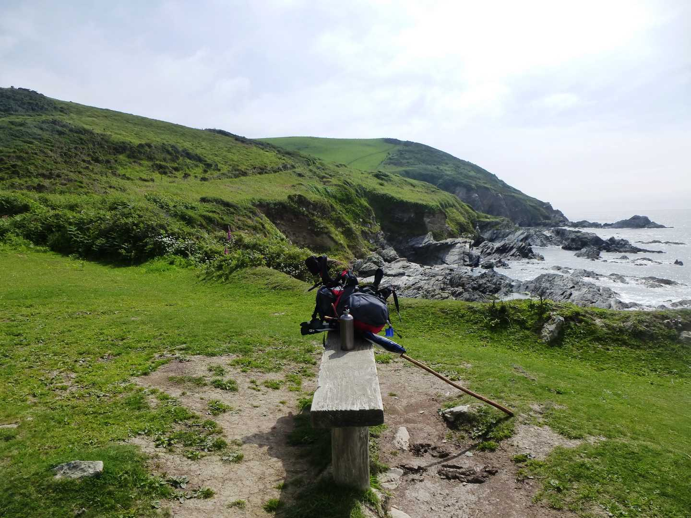
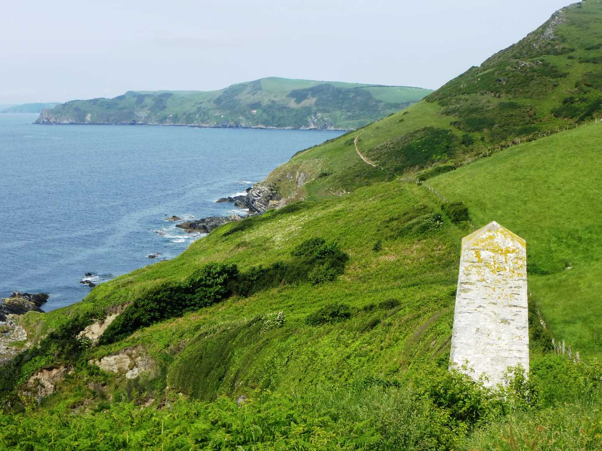

Start Ref: 209 509
End Ref: 126 510
Distance: 8.5 miles
Time: 6hrs
A Walk Requiring a Shuttle Run
This walk starts in the beautiful picture postcard village of Polperro, the parking for which is just outside of the village on the A387. However, our walk is going to start at the head of the harbour and follow the western edge along the waters edge and past the quaint old fishing houses and up the steps that lead to the coastal path and out to the point. Here we will find the old saltings buildings (and rather like our last walk, this building is on the cover of our new OS Explorer map). Here we follow the path to the right, and have to follow a slight path diversion due to erosion, past Chapel Cliff. If we are sharp eyed here, we will see the little hole leading into the cliffs, right next to the footpath.
This section of the coastal footpath is very undulating, and I have found that plenty of refreshment is needed to accompany this walk, and over the next few miles we will certainly need to stop plenty of times to refresh our palates. As we walk on, we pass a little white day marker which stands guard next to the footpath. We will need to make our own spots for stopping, until we get to a little flat low area near East Coombe. Here, some kind souls have provided a bench, and not only do we get a good view out to sea, but there are deer on the slopes behind us. I hope that you see them like I have.
On we must continue, over Lansallos Cliff before we drop down to the beautiful Sandheap Point, and yet another of Cornwall`s hidden gems of a beach (with its footpath back up to Lansallos).
We must tear ourselves away from here, as we still have a fair route to go, so back to the footpath we must go as we head on to Pencarrow Point. From here we will start to get glimpses of one of Cornwall`s most famed beaches, which is lucky, as we need the view of Great and Little Lantic Beaches to take away the pain of the steepness of this section of the coast path. I have only ever sailed or paddled to these beaches, and as I watch people walking down and back up from the beach, I am not entirely sure I will ever reach them by foot, especially if I have just walked the path we just have!
We can pause at the gate, where a footpath tries to lead us to the beaches, before we continue along the fields heading up the unrelenting (you may gather that I was beginning to feel the burn in my legs by this point) steep section to Blackbottle Rock. Here again we can pause for a top up of water before following the path towards Polruan.
The footpath becomes easier and flatter now as we cross in and out of fields – although always following the coast –and then below the first few houses as we come out at the point just below the Coast Guard Station. At this point the path leads us up to the top of the village and then left through the car park before dropping down towards Polruan Blockhouse, although it turns right just short of this and then back towards the quay.
Polruan, like many coastal villages has good pubs and eateries, and a lovely quay with plenty of seats to relax and enjoy. I find that being picked up in Fowey is by far the easier, so taking the Polruan Foot Ferry is a lovely way to end our walk.
Well done on completing this walk.